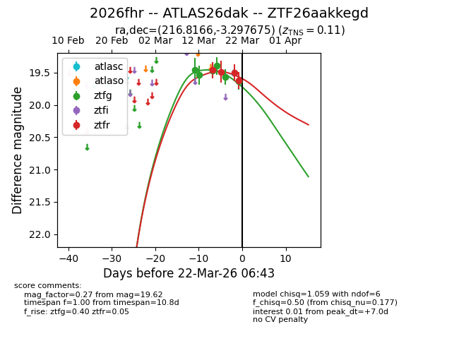
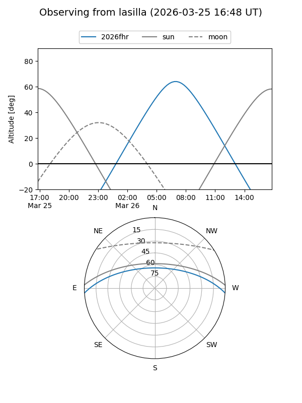
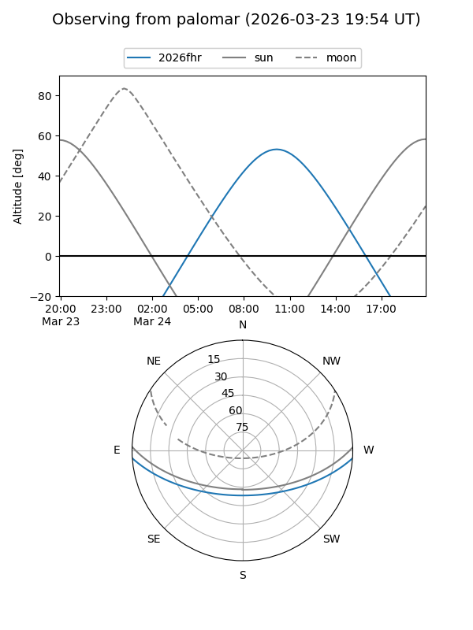
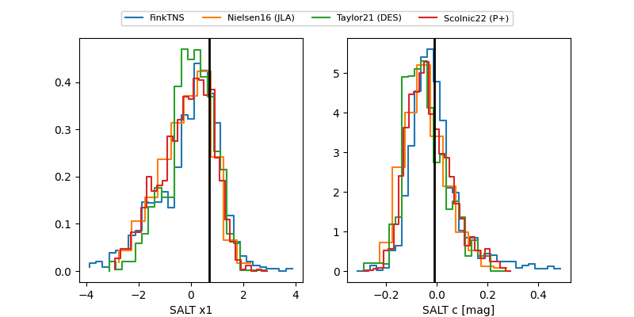

2026fhr
Target 2026fhr at 2026-03-22 06:46
Aliases and brokers:
FINK: link
Lasair: link
ALeRCE: link
TNS: link
YSE: link
alt names
ZTF26aakkegd (ztf,fink_ztf)
2026fhr (tns,yse)
ATLAS26dak (atlas)
Coordinates:
equatorial (ra, dec) = 216.8166,-3.29768
equatorial (HMS+DMS) = 14:27:15.99,-03:17:51.63
galactic (l, b) = (343.8792,+51.78903)
Flags:
confirmed ia
Photometry:
last ztfg=19.63, ztfr=19.62
6 ztfg, 4 ztfr detections
Lightcurve

Visibility


Additional plots
